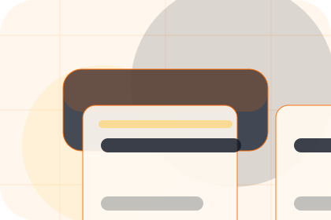
Pressure
Problem names the real friction visitors bring to the home route, so the page feels relevant before any claim is made.
Construction
Construction platform grid for certainty around cost and disruption.

Home / 02
Vision adds professional context to the home route, using the construction platform grid structure to support certainty around cost and disruption before visitors choose a next step.
Forge uses project control cards and focused copy to make the decision easier to scan, aligning the section with certainty around cost and disruption rather than filling space.
Open CompanyForge structures vision around context, judgment, and a clear next route so visitors can compare the block quickly before they request an estimate.
Request EstimateHome / 03
Problem frames the pressure behind the visit, then connects it to a practical path visitors can recognise and act on.
The copy avoids blame and panic. It shows the common friction, the practical consequence, and the calmer route Forge uses to move people forward.
Open Services
Problem names the real friction visitors bring to the home route, so the page feels relevant before any claim is made.
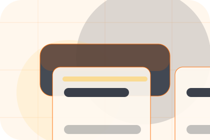
The copy connects that friction to practical risk, delay, confusion, or missed opportunity without exaggerating it.
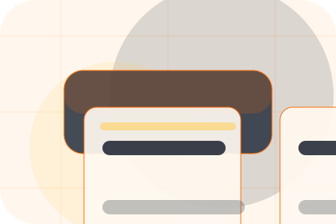
The final cue moves visitors toward a clearer route instead of leaving them with the problem alone.
Home / 04
Promise defines the better state Forge is built to create, with enough detail to make the promise believable.
A build-management site with construction CTAs, project panels, safety proof, and estimate routing. The section grounds that direction in concrete benefits, visible tradeoffs, and a next route visitors can use when the promise feels relevant.
Open ProjectsPromise defines what becomes clearer, easier, or safer when Forge is the chosen route.
Home / 05
Services explains the practical scope, best-fit situations, and expected outcome so construction visitors can compare options without decoding jargon.
The section keeps the offer concrete: what is included, who it is best for, what decision it supports, and which linked route gives the deeper detail.
Open ServicesWho should use services and when it belongs in the home journey.
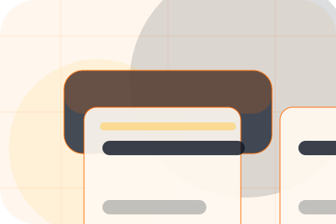
The practical benefit visitors should expect after choosing this route.
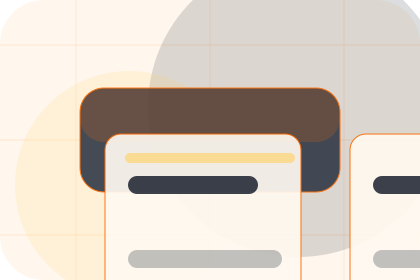
Where to compare details, pricing, support, or contact options before committing.
Worksite software hero
Select the closest route and Forge keeps the next step, proof, and follow-up expectation aligned with certainty around cost and disruption.
Home / 06
Projects adds professional context to the home route, using the construction platform grid structure to support certainty around cost and disruption before visitors choose a next step.
Forge uses project control cards and focused copy to make the decision easier to scan, aligning the section with certainty around cost and disruption rather than filling space.
Open MaterialsProjects gives the page a specific angle instead of repeating the navigation label.
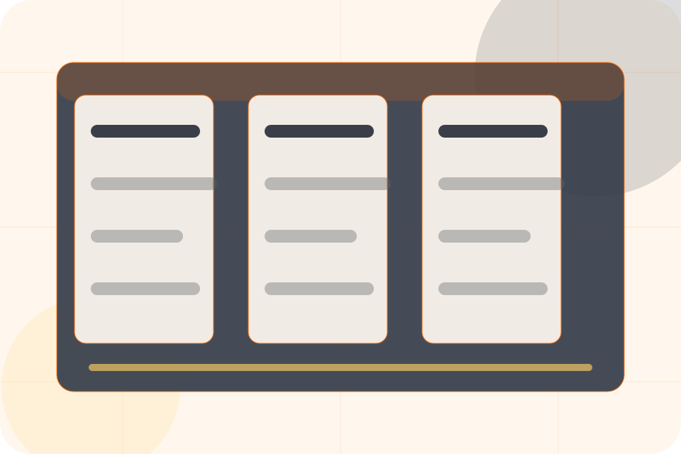
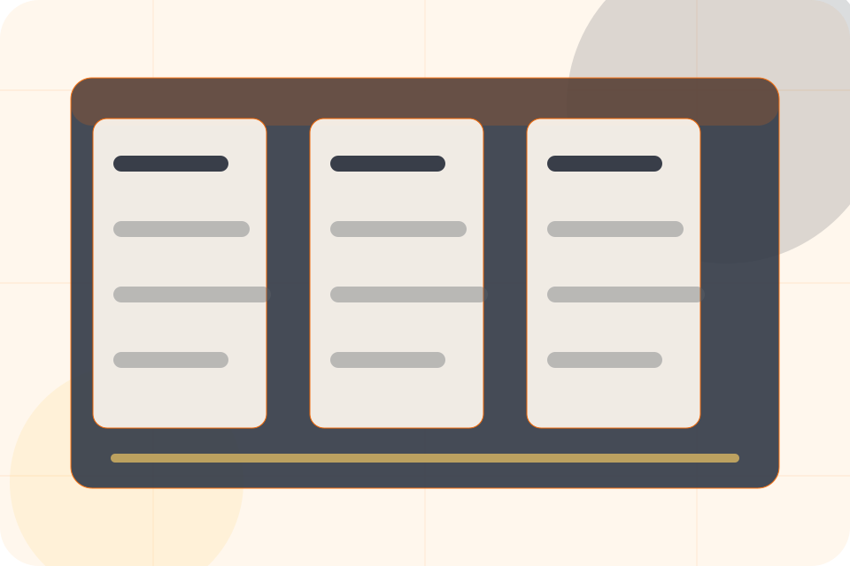
Home / 07
Process explains the operating sequence so visitors can see how the first request becomes a clear recommendation and follow-up.
The steps are written from the visitor side: what they do first, what Forge clarifies, what they receive, and how support continues.
Open ProcessHow visitors begin this route and what detail is useful at the first step.
What Forge reviews, filters, or explains before recommending the next move.
What the visitor receives afterward, including support, proof, or a handoff to the next page.
Home / 08
Proof shows what changes after the work: clearer decisions, visible progress, and proof points that connect the offer to real outcomes.
The layout connects before-and-after thinking with measured outcomes, making the result easy to scan without promising what the business cannot guarantee.
Open SafetyThe uncertainty, delay, or missed opportunity visitors bring into proof.
The clearer, safer, or more valuable state Forge is designed to support.
The visible cue that connects proof to a believable decision, not a loose claim.
Home / 09
Questions handles buying doubts directly so visitors can understand timing, fit, limits, and the safest next step.
Answers are short by design: enough to remove hesitation, not so much that the page turns into documentation before the visitor can act.
Open Contact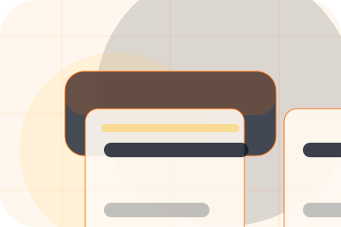
Questions gives the page a specific angle instead of repeating the navigation label.
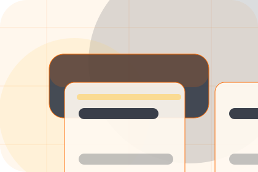
The project control cards show what to compare, what to avoid, and what matters most for construction, building & renovation visitors.
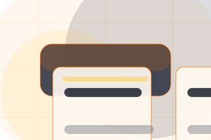
The final cue points to a useful internal route so the section keeps the journey moving.
Forge starts with a focused intake so the recommendation matches the visitor's context, risk, timing, and readiness.
Each route explains inclusions, exclusions, documents, timing, and the decision points that affect final delivery.
The theme uses construction platform grid, project control cards, and project estimator form, before/after slider, upload photos rather than a shared template rhythm.
Worksite software hero
Select the closest route and Forge keeps the next step, proof, and follow-up expectation aligned with certainty around cost and disruption.
Home / 10
Forge closes the home route with a clear action, a quick reminder of the value, and a low-friction way to request an estimate.
Visitors who are ready can use the primary action. Visitors who are still comparing can scan the section links, proof, and support routes before they request an estimate.
Request EstimateThe final block keeps the choice simple: act now, compare one more proof route, or send enough detail for a focused response.
Request Estimatecertainty around cost and disruption
A build-management site with construction CTAs, project panels, safety proof, and estimate routing. Home ends with a direct path to request an estimate, plus enough context for visitors who still need to compare.
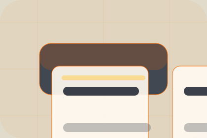
Request Estimate